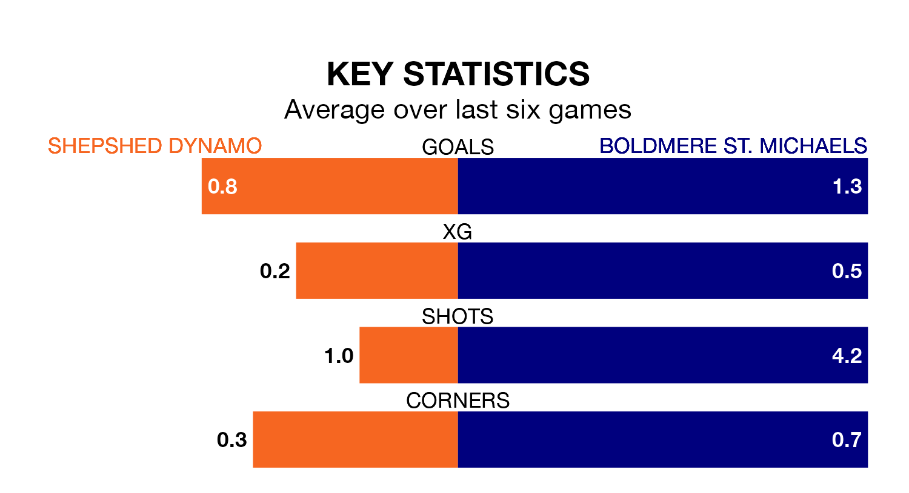

Shepshed Dynamo welcome Boldmere St. Michaels to the Dovecote on Saturday looking to pick up points to end their three-game losing streak.
Shepshed Dynamo's struggles have left them with five points from their last six Northern Premier League Division One – Midlands matches, while their opponents have earned seven from a possible 18.
With 25 goals in 24 games so far this season, Shepshed Dynamo are the league's third-lowest scorers with 1.0 goals per game. And they are conceding more than average, letting in 43 goals at a rate of 1.8 per game.
Boldmere St. Michaels, meanwhile, are above average scorers, with 1.7 goals per game, compared to a league average of 1.5. They have conceded 1.5 goals per game.
The home team are 15th in the table after 24 games, of which they have won seven and drawn four, earning 25 points.
The visitors are four places ahead of Shepshed Dynamo in 11th, with 10 wins and three draws putting them on 33 points.
In the last three years, Shepshed Dynamo and Boldmere St. Michaels have played each other on three occasions. Shepshed Dynamo won all of them.
Their last meeting was on September 16, when Shepshed Dynamo won 3-1 away.
Shepshed Dynamo's last match was on January 27, a 2-1 loss against Anstey Nomads.
Boldmere St. Michaels lost 3-2 against AFC Rushden and Diamonds last time out, on Tuesday.
Updated: 10:40 (UTC), 01/02/24